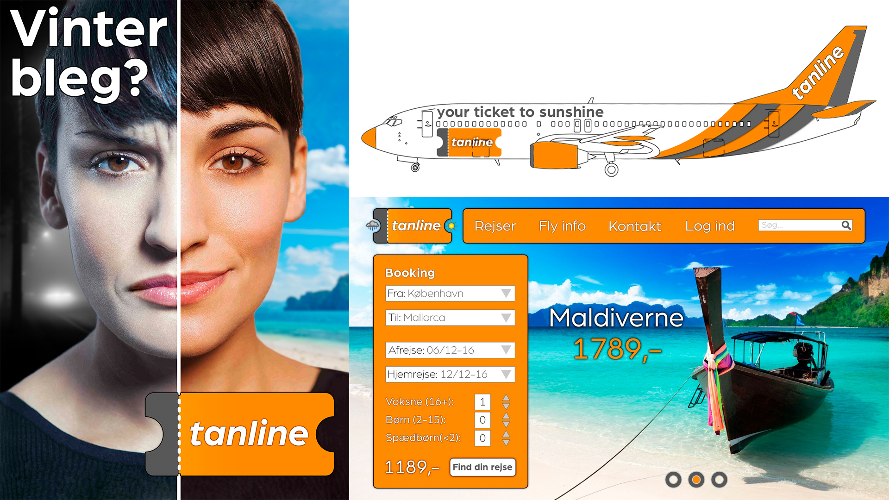
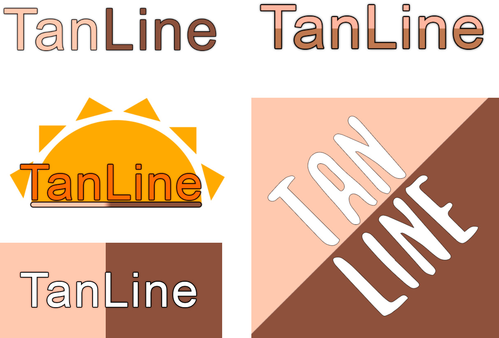
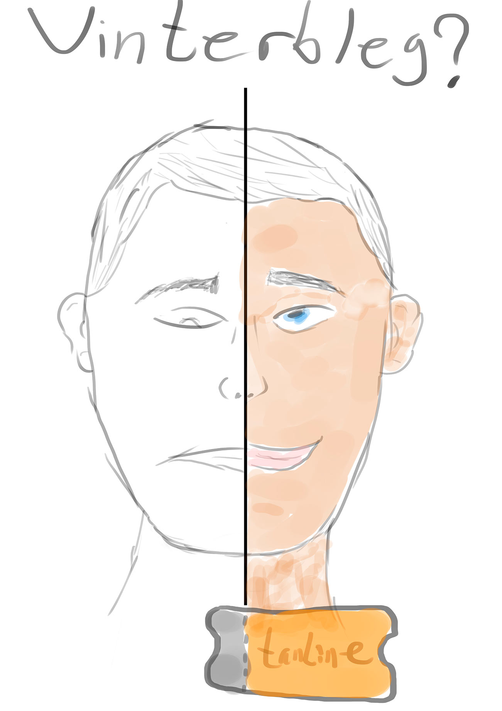
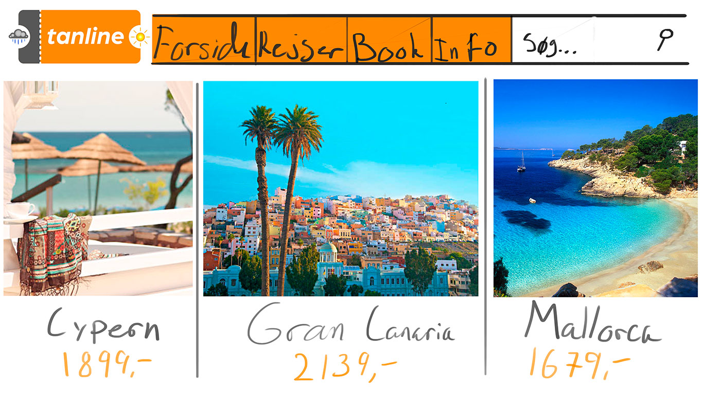

Tanline
Visuel identitet
Sammen med en klassekammerat i 3.g opdigtede jeg et lavpris flyselskab og dettes visuelle identitet. Selskabet Tanline fløj kun til destinationer, hvor man var garanteret at blive solbrun.
Forud for arbejdet med vores eget flyselskab, analyserede vi tre eksisterende. De endelige produkter lavede jeg i Photoshop, mens vi var fælles om resten af processen
-
Proces
-
Brandnavn

Eftersom vi ville appellere til en yngre målgruppe, havde de fleste af vores forslag til brandnavnet noget humoristisk over sig.
-
Logo
Da vores navn lagde op til noget med brunet hud, baserede vi i første omgang vores logo på dette. Dette blev hurtigt forkastet, da farverne ikke var indbydende.
-
Plakat
Vi fandt hurtigt på, at vores plakat skulle vise hvilken visuel forskel en tur med Tanline ville have på en.
-
Hjemmeside
Et af mange forslag til hjemmesidens opbygning.
-
Livery design

Vi gennemgik i alt 14 varianter af flyets liverydesign, hvor vi i den 40 sider lange rapport argumenterede for og imod placeringen af elementerne for mange af dem.
-
Resultat
-
Event Title
Nullam vel sem. Nullam vel sem. Integer ante arcu, accumsan a, consectetuer eget, posuere ut, mauris. Donec orci lectus, aliquam ut, faucibus non, euismod id, nulla. Donec vitae sapien ut libero venenatis faucibus. ullam dictum felis eu pede mollis pretium. Pellentesque ut neque.
-
Event Title
Nullam vel sem. Nullam vel sem. Integer ante arcu, accumsan a, consectetuer eget, posuere ut, mauris. Donec orci lectus, aliquam ut, faucibus non, euismod id, nulla. Donec vitae sapien ut libero venenatis faucibus. ullam dictum felis eu pede mollis pretium. Pellentesque ut neque.